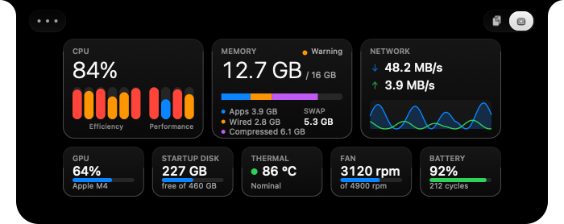

Bản vẽ đề xuất cho số liệu trên thanh menu, menu thả xuống và tab System của notch, theo cách trình bày của iStat Menus 7. Lý do và phạm vi ở research-istat-menus-7.md. Số liệu trong bản vẽ là số mẫu.
Ba ý chính: thanh menu đơn sắc, hai dòng, bề rộng cố định; bấm vào số liệu mở một bảng kính ngay dưới nó; chỉ màu nhấn và đỏ, không còn năm màu.
1. Thanh menu
Hôm nay Figghost đặt một dòng chữ. Đề xuất vẽ mỗi số liệu thành một ô template, theo màu chữ của thanh menu, gộp chung một mục như hôm nay hoặc tách riêng từng mục.
Hôm nay
FinderTệpSửaXemĐiCửa sổ
CPU 23% RAM 79% NET 52.1 MB/sTh 4 14:32
Ba số liệu tốn khoảng 230 điểm. Kiểu hai dòng bên dưới đặt năm số liệu vào khoảng 200 điểm, quan trọng trên máy có notch, nơi bên phải notch hết chỗ trước.
Đề xuất, gộp một mục, đơn sắc
FinderTệpSửaXemĐiCửa sổ
CPU23%RAM79%NHIỆT62°Th 4 14:32
Đề xuất, nền tối, đồ thị có màu
XcodeTệpSửaXemTìmSản phẩm
CPU23%RAM79%Th 4 14:32
Đồ thị có màu dùng màu nhấn; một nhân trên 85% chuyển đỏ. Chữ luôn theo màu thanh menu.
Năm kiểu của một ô
23%
ChữNhư hôm nay, không nhãn. Khoảng 34 điểm.
CPU23%
Hai dòngNhãn 7,5 điểm trên giá trị 11 điểm. 32 điểm.
Đồ thị30 lần đọc gần nhất. 30 điểm.
Cột nhânMột vạch mỗi nhân, khe giữa nhóm tiết kiệm và hiệu năng. Chỉ CPU.
Tải lên, tải vềHai dòng có mũi tên. Chỉ Mạng. 62 điểm.
2. Menu thả xuống
Bấm một ô mở một bảng kính ngay dưới nó, cùng kính với notch. Từ trên xuống: số lớn, đồ thị với khoảng thời gian, các khối có tiêu đề chữ hoa nhỏ và số căn phải, cuối là app dùng nhiều nhất. Esc hoặc bấm ra ngoài thì đóng.
XcodeTệpSửaXemTìmSản phẩm
CPU23%RAM79%Th 4 14:32
CPUApple M4, 10 nhân
23%
Người dùng 15%Hệ thống 8%
1 phút1 giờ1 ngày
NHÂN
Tiết kiệm
Hiệu năng
TẢI TRUNG BÌNH
1, 5, 15 phút2,41 2,10 1,87
Thời gian chạy3 ngày 4 giờ
DÙNG NHIỀU NHẤT
XXcode38,2%
SSafari12,4%
FFigma8,1%
TMicrosoft Teams5,6%
TTerminal3,2%
Mở tab System trên notch
Mở Giám sát hoạt động
BỘ NHỚÁp lực: Bình thường
12,7 GB / 16 GB
App3,9 GB
Wired2,8 GB
Đã nén6,1 GB
1 phút1 giờ1 ngày
SWAP
Đã dùng5,3 GB trong 6 GB
DÙNG NHIỀU NHẤT
XXcode4,1 GB
SSafari2,3 GB
TMicrosoft Teams1,2 GB
FFigma980 MB
FFigghost26 MB
Bộ nhớ: vòng tròn ba sắc độ màu nhấn, trạng thái bằng chữ
MẠNGWi-Fi
Tải về
48,2 MB/s
Tải lên
3,9 MB/s
1 phút1 giờ1 ngày
Tải về, trên trụcTải lên, dưới trục
WI-FI
MạngNha-5G
Tốc độ liên kết1 201 Mb/s
IP nội bộ192.168.1.24
Đã nhận, đã gửi4,2 GB, 610 MB
ETHERNET
Trạng tháiChưa cắm
IP công cộngBật trong Cài đặt
Mạng: đồ thị đối xứng, IP công cộng tắt sẵn
3. Tab System trên notch
Giữ bố cục ba thẻ lớn và năm thẻ nhỏ. Đổi màu: CPU một màu nhấn, nhân tiết kiệm là sắc nhạt, đỏ khi quá 85%; bộ nhớ ba sắc độ màu nhấn; mạng đối xứng. Tiêu đề chữ hoa nhỏ, số chữ số đều.

Hôm nay: năm màu cho các phần khác nhau.
CPU84%Tiết kiệmHiệu năng
BỘ NHỚ Cảnh báo12,7 GB / 16 GB
App 3,9 GB Wired 2,8 GBĐã nén 6,1 GB Swap 5,3 GB
MẠNGVề 48,2 MB/sLên 3,9 MB/s
GPU64%
Apple M4
Ổ KHỞI ĐỘNG227 GB
trống, 460 GB
NHIỆT86 °C
Bình thường
QUẠT3120 rpm
tối đa 4900 rpm
PIN92%
212 lần sạc
Đề xuất: màu nhấn và đỏ, mạng đối xứng.
4. Trang Cài đặt
Trang System thêm nhóm Thanh menu, vẽ như System Settings theo design.md. Bản xem trước ở đầu nhóm vẽ đúng như trên thanh menu; kéo một dòng để đổi thứ tự. Nhóm Menu (khoảng mặc định, số app, IP công cộng) nằm sau Nâng cao…
Thanh menu
CPU23%RAM79%NHIỆT62°
CPUHai dòng
Bộ nhớHai dòng
MạngTải lên, tải về
Nhiệt CPUHai dòng
GPUChữ
Ổ khởi độngChữ
Gộp thành một mụcTắt thì mỗi số liệu một mục, Command-kéo để đổi chỗ.
Đồ thị có màuĐồ thị và cột nhân theo màu nhấn, đỏ khi quá 85%.
Bấm vào số liệuMở menu
5. Lấy gì, bỏ gì
Của iStat Menus 7
Trong Figghost
Kiểu hai dòng, đồ thị, cột nhân trên thanh menu; bề rộng cố định
Lấy, bước 1
Mục gộp và mục tách
Lấy, mặc định gộp như hôm nay
Menu thả xuống có đồ thị, khối, app dùng nhiều nhất